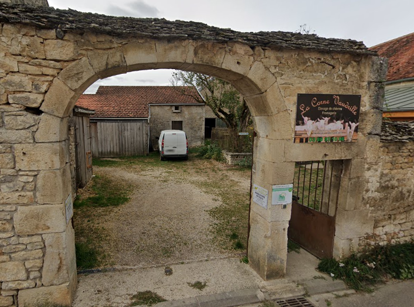
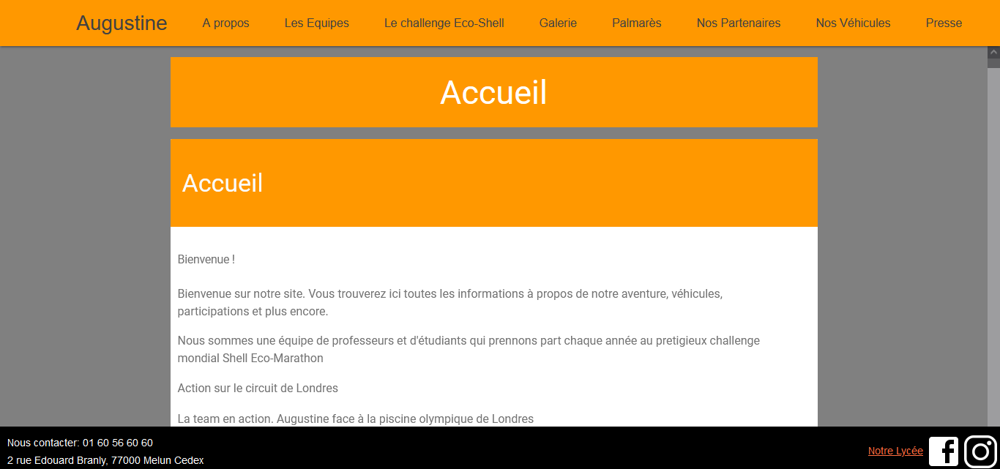
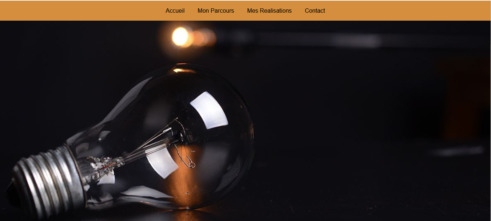
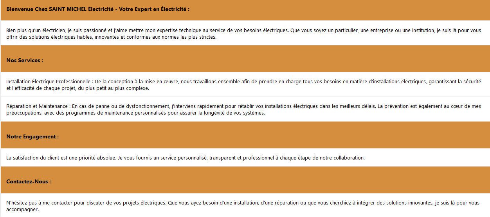
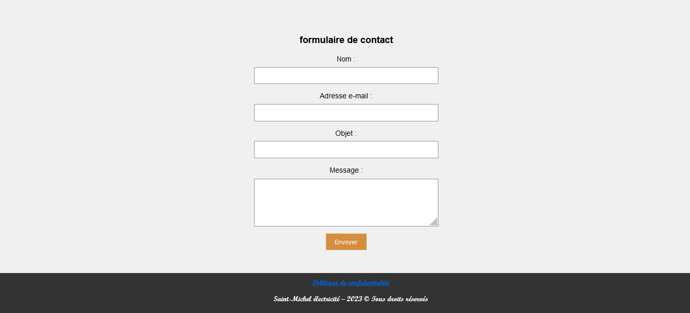

Expériences professionnelles
Stage à La Corne Vaudrille
La Corne Vaudrille est une chèvrerie à Savoisy (21594) en Bourgogne-Franche-Compté. J'ai pu y faire 6 semaines de stage en tout (1 en novembre 2017 de mon propre chef, 1 en février 2019 dans le cadre scolaire, 4 en juin 2022 dans le cadre scolaire)  J'ai pu faire la traite, nettoyer les locaux, curer les chèvres, participer à la création de fromages, accueilli les clients, entretenir le pré des chèvres.
Lien vers leur site : https://lacornevaudrille.fr
Stage à Les Tilleuls
Les Tilleuls est un élevage de vaches à Saint-Jean-le-Blanc. J'ai pu y faire 2 semaines de stage du 15/02/2021 au 26/02/2021.
J'ai pû participer à la traite des vaches le soir, nettoyer les batiments où les vaches étaient quand elles n'etaient pas dehors, nourrir les vaches et les veaux matin et soir, couper du bois de chauffage
Stage à Tournesol
Réalisation d'un site web pour l'association Tournesol du lycée Léonard de Vinci à Melun. J'ai pu faire 6 semaines de stages du 22/05/2023 au 30/06/2023
Ce site a été réalisé grâce au générateur de site statique GetPelican, et au template Materialistic-Pelican qui a subit beaucoup de changements (retrait d'un onglet qui était sur le coté gauche, ajout d'un footer, modification dans le CSS, etc...), en HTML/CSS et en python.  Il a pour objectif de présenter la voiture Augustine IV qui succède à Augustine III et qui est une voiture construite par des étudiants du lycée et qui fonctionne entièrement à l'énergie solaire. Celle-ci est candidate au Shell éco-marathon.
J'ai du prendre en main l'outil GetPelican et le template materialistic-pelican, apprendre le fonctionnement, régler toutes les problématiques liées à son statut de générateur de site, modifier le template, créer plusieurs chartes graphique, etc...
Lien vers le site (il s'agit d'une version du site sans tout le contenu car la version complète n'a pas encore été publiée): https://titouanvanrompaey.github.io/augustine/
Stage chez Saint-Michel électricité
Création d'un site web pour un électricien situé à Yèbles 7 semaines de stages du 11/12/2023 au 09/02/2024
Site réalisé entièrement manuellement en PHP HTML/CSS. Malheureusement je n'ai jamais été recontacté donc pour tout finaliser mettre le site en ligne donc celui-ci n'est pas hébergé et a des problèmes encore non résolus. Cependant voici ce à quoi il ressemble:   Mon camarade et moi même avons du créer un moyen pour les clients de contacter notre maitre de stage. Nous avions tout d'abord pensé à mettre un formulaire qui enregistre les données dans une base de données. Cependant j'ai eu l'idée de ne pas utiliser de bases de données mais d'envoyer un mail directement pour plus de sécurité et de practicité. Par conséquent, j'ai appris à utiliser PHPMailer ainsi que SendGrid pour ce procéder. Ainsi lorsqu'un utilisateur remplis ce formulaire,  un mail est envoyé et le propriétaire de l'adresse mail peut le consulter